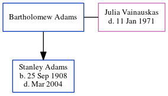

Bartholomew Adams
| [ Calendar ] | [ Surnames Index ] | [ Census Index ] | [ Family History ]Bartholomew Adams and had 1 child with Julia Vainauskas: Stanley.
Children
- Stanley was born on Sep 25, 1908
Family Tree
Generated by ged2site. Last updated on Jun 13, 2024